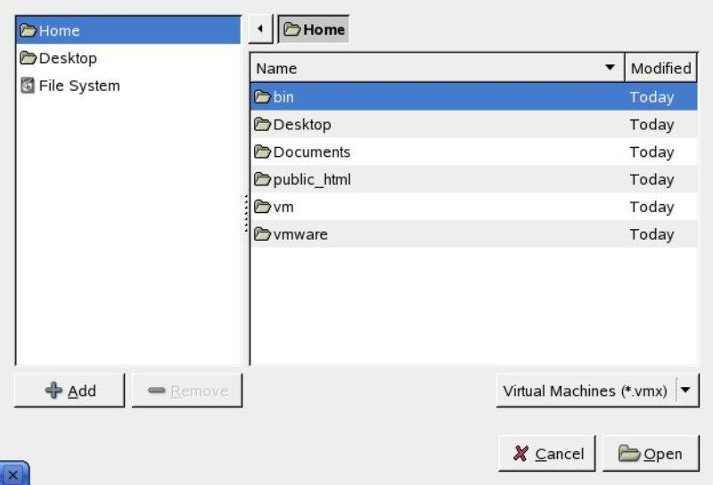
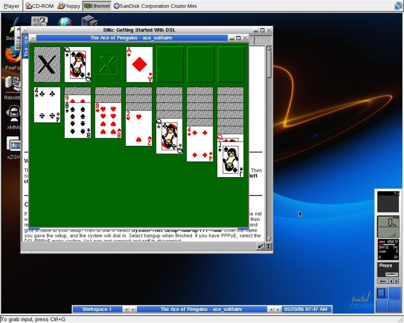
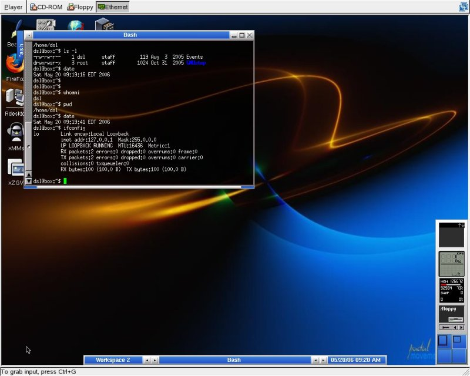
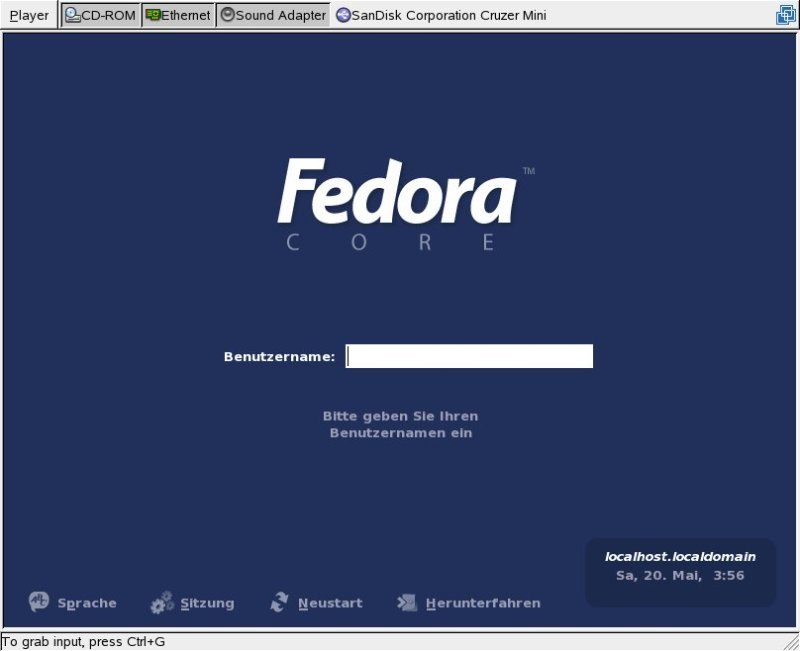
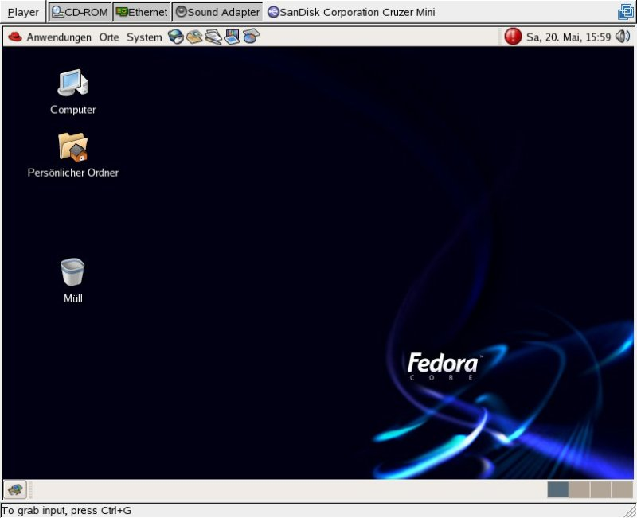
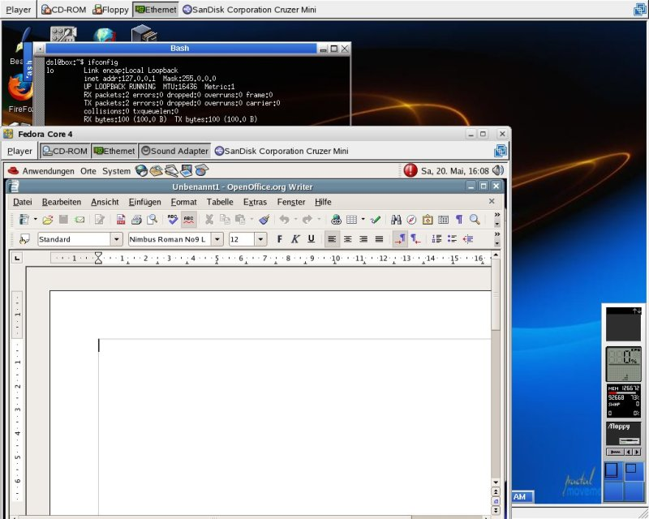
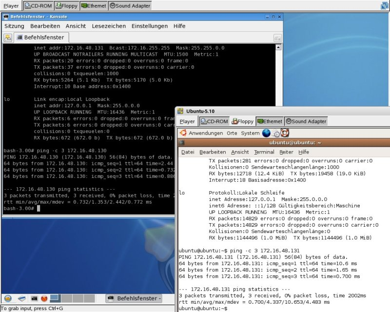
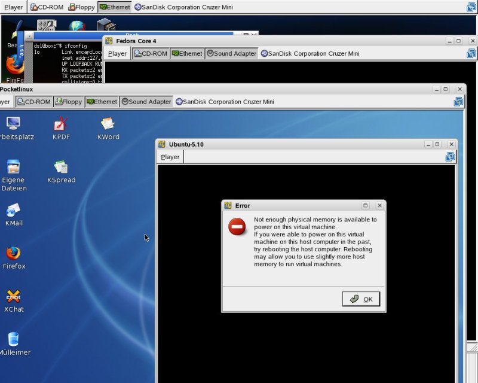
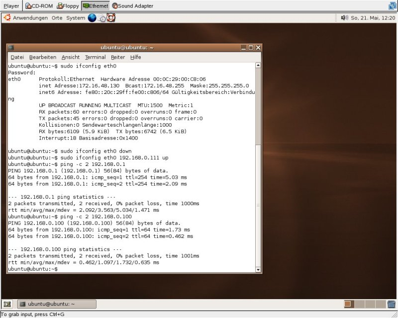

A Brief Introduction to VMware Player
By Edgar Howell
The other day on the way home from work, between the streetcar and the bus, I spent a couple of minutes at the train station bookstore, and picked up a magazine with a DVD containing 10 new "Linux-PCs". Hmmmm...
After getting off the bus, but before I had a chance to complete the walk home, it began to rain. That ruined all hopes of being able to mow the lawn... so I decided to investigate the DVD, instead.
As it turned out, it contained VMware Player and 10 virtual machines, or VMs: Damn Small Linux, Fedora Core 4, Pocketlinux, and so on. It was beginning to look as if the weekend would have some sunshine, after all!
Just What Is VMware?
For those not familiar with virtualization in general, or VMware in particular, virtualization has been around in the mainframe world for some 30-odd years. It enables effectively simultaneous execution of more than one instance of operating systems — including, in the case of VMware, ones that would not normally even be able to execute on the physically available hardware. This is a remarkable accomplishment that requires convincing the operating system that it really has sole ownership of the hardware environment it requires.
This unfairly terse description falls horribly short of doing justice to the amazing feat - but there is no shortage of far more detailed descriptions on the Internet.
Installation
As usual, the first step is to install VMware Player. Well organized by VMware, installation was a real no-brainer. I did read the prompts and consider the responses, but wound up just accepting the defaults offered by the installation script.
Perhaps it was an idiosyncrasy of the particular magazine that I picked up (it actually addresses users of Wimp/OS), but they had used a compression program I neither had nor had ever heard of. No problem - it was available at SourceForge, and just needed to be installed.
[ '7zip' is actually not a Wind0ws-centric program at all; it's been available for Linux for quite a while now. To quote Debian's package listing, "7-Zip is the file archiver that archives with the highest compression ratios. The program supports 7z (that implements LZMA compression algorithm), ZIP, Zip64, CAB, RAR, ARJ, GZIP, BZIP2, TAR, CPIO, RPM and DEB formats. Compression ratios with the new 7z format are 30 to 50% better than ratios with the ZIP format." Good stuff, in other words... except that their RAR compressor is non-free. -- Ben ]
web@linux:~/vm> cp /media/usbdisk_1/p7zip_4.39_x86_linux_bin.tar.bz2 . web@linux:~/vm> ls p7zip_4.39_x86_linux_bin.tar.bz2 web@linux:~/vm> bunzip2 p7zip_4.39_x86_linux_bin.tar.bz2 web@linux:~/vm> ls p7zip_4.39_x86_linux_bin.tar web@linux:~/vm> tar xf p7zip_4.39_x86_linux_bin.tar web@linux:~/vm> ls p7zip_4.39 bin ChangeLog contrib DOCS install.sh man1 README TODO web@linux:~/vm> ls p7zip_4.39/bin 7z 7za 7zCon.sfx 7zr Codecs Formats web@linux:~/vm> cp p7zip_4.39/bin/7za . web@linux:~/vm> l total 8360 drwxr-xr-x 3 web users 4096 2006-05-20 17:24 ./ drwxr-xr-x 15 web users 4096 2006-05-20 17:20 ../ -rwxr-xr-x 1 web users 1198328 2006-05-20 17:24 7za* drwxr-xr-x 6 web users 4096 2006-05-20 17:24 p7zip_4.39/ -rwxr-xr-x 1 web users 7331840 2006-05-20 17:23 p7zip_4.39_x86_linux_bin.tar* web@linux:~/vm>
After that, installation of the VMs was quite straight-forward.
web@linux:~/vm> cp /media/dvd/ubuntu/computer/pc_gratis/dsl-linux.exe . web@linux:~/vm> ./7za x dsl-linux.exe 7-Zip (A) 4.39 beta Copyright (c) 1999-2006 Igor Pavlov 2006-04-13 p7zip Version 4.39 (locale=en_US.UTF-8,Utf16=on,HugeFiles=on,1 CPU) Processing archive: dsl-linux.exe Extracting dsl-linux Extracting dsl-linux/nvram Extracting dsl-linux/dsl-test-250.vmdk Extracting dsl-linux/other24xlinux.vmx Everything is Ok web@linux:~/vm>
Now, VMware Player was fully functional and could execute the available VMs.
Using Virtual Machines
Under SUSE with KDE, click on the panel icon for K Menu, then 'System' -> 'More Programs' -> 'VMware Player'.
Navigation is not particularly challenging. As a first test, I chose Damn Small Linux from the 'vm' directory.
Solitaire is a bit sluggish on this 2.6 GHz Celeron(tm), but bearable. In any case, the following definitely isn't SUSE!
When the bottom line shows "To grab input, press Ctrl+G", you can move the cursor over the window as usual. Once you press Ctrl+G, the cursor belongs to that window, and it is necessary to press Ctrl+Alt to effectively de-activate that window and free the cursor. Ctrl-Alt-F2 and the like still work as usual.
At this point, I halted the VM and shut VMware Player down. Then, I rebooted the hardware. Upon restarting this VM, the former status was restored:
Before re-starting VMware Player, I also added another couple of VMs. The following looks interesting for this long-time SUSE user, at least:
Indeed, after logon:
And for the skeptics in the crowd, yes, both are active at the same time:
The initial boot of a VM takes quite a while, just as does booting hardware. On the other hand, restarting a VM that has been active for a while is extremely fast.
Activating the network was no problem at all. In each of two VMs, after a right-click on the "Ethernet" button, I selected "host-only" and then assigned IP-addresses as in "ifconfig eth0 172.16.48.130 up". After that, ping worked as expected:
Sharing Hardware
VMware Player seems to share the hardware with the native operating system quite well. While using Midnight Commander under SUSE to copy VMs from the DVD into the appropriate directory, I started Ubuntu under VMware, and it discovered the DVD drive and went into update mode (synaptic). That slowed down the copying considerably, but it worked just fine.
It is interesting that there is almost no limit to the number of VMs available. VMware doesn't use partitions; each VM exists within its own directory. I renamed the Ubuntu directory and unpacked it again, creating a clone. When the renamed VM was started, it came up with the status at the point where it had been shutdown. The new VM went through the usual (simulated) hardware boot.
The SUSE VM is 10.0, which is my most-current version. After placing the distribution DVD in the drive and clicking on the "CD-ROM" button, there was no problem using YaST to add software to the VM. Although VMware Player doesn't support creating new VMs, they clearly can be updated. Since YaST uses RPMs, installing one ought to work, and I would expect that to be the case for a tarball, as well.
Finite Resources
But don't get over-confident in starting VMs! At least my resources are finite:
Networking
After assigning an appropriate IP-address such that the Ubuntu VM was on the same sub-net as the network printer, it was possible to ping it. Similarly for the notebook, manually assigned IP-address 192.168.0.100. This required using the "Ethernet" button to change the status of the network from "host-only" to "bridged".
There was no trouble using SSH to log onto the notebook from Ubuntu, or the other way around, although this of course required using the ad-hoc IP-addresses rather than host names.
Why Bother?
Some time ago, when I mentioned to someone that I was interested in checking out virtualization on a PC, his response was "Why?" Wow, someone even more skeptical than I am! But the question is certainly legitimate.
Typically the "traditional" reason to use virtualization in this environment has been consolidation of servers, as in a server farm that has lots of hardware idle most of the time. Particularly if hosting for customers who may be competitors, virtualization provides clean separation of VMs as opposed to simply providing service for many customers on one machine.
However, I don't have a server farm in need of consolidation in the office at home, and I doubt that most readers do either. However, if you think about it, this can be a very interesting technology, although certainly not of use to everybody.
As you saw above, given available VMs, it is essentially trivial to make an unfamiliar environment available in a non-trivial way. As a long-time SUSE user, I'm not at all familiar with GNOME. Disparaging comments by others notwithstanding, I am interested in playing around with GNOME, which is very different from what I am used to.
Indeed, this environment should be ideal for both teachers and students. One of the things that I really appreciate about GNU/Linux is the ability to learn new things at my own pace, at home, when I have the time and at no or minimal expense. Without a great deal of effort on my part, I can now get familiar with several distributions I might never have had the time for.
Someone teaching a course could set up a series of exercises for his students, and just needs to copy a handful of VMs onto CD-ROM. This would be very effective for a course on some Linux distribution, particularly if the students have only Wimp/OS at home.
Or consider the need to do regression tests. The fact that every VM restarts at the point it had been shut down would be extremely nice for testing. Set up initial conditions and save the directory to ensure that every test later run actually is testing the same thing, unaffected by any side-effects of something else run between tests.
Philosophy 101
To those who might object to VMware's proprietary business model, I would reply that it is another tool on the market, and, from my perspective as a consultant, I like having it in my toolbox. Very many years ago, on a job-interview, I had to admit that I didn't yet have any experience with one particular package. Someone else got that job. Made sense then, makes sense today. Do you want to be the one to say "I can learn that"? How about "Been there, done that"?
In my opinion, virtualization is going to be very important, very soon. I am really looking forward to my first machine with Vanderpool or Pacifica technology.
Conclusion
This "brief" introduction comes nowhere near doing justice to the accomplishment of VMware. It can be installed under Wimp/OS to run GNU/Linux or the other way around (if your proprietary EULA license gives you access to or permits your producing the appropriate VM). Or merely to isolate a test-bed from a production environment, as in the above.
There were problems, but not all of them were due to the product. Likely attributable to VMware are problems with reboot and date/time, although it might be argued that these are not bugs but features. Using "reboot" or "shutdown -r now" returns the VM to single-user mode. I couldn't figure out how to get "startx --:1" under SUSE to do any good. And after having used VMware's "Quit" button to shut down a VM for a couple of days, on restart it has the date and time of shutdown. Well, in some scenarios that does make sense.
VMware certainly does require significant resources. The version of Solitaire that comes with SUSE will finish a game automatically if told to try; natively, on a notebook with 1 GB of memory, it moves about 5 cards per second. Under VMware, however, it takes about 2 seconds per card. ping can take so long that it seems to have hung: in spite of reporting 0.352 ms, the wall-clock time was closer to 10 seconds!
This is not the responsibility of VMware, but my PC has only 512 MB - which sure seemed like a lot at the time. Two instances of Ubuntu can be started in that, but their response times are egregiously slow. A third instance fails due to lack of memory.
A general problem with an environment where several different systems can be played with is inexperience with each, by definition (again, not relevant to VMware specifically.) It took frustratingly long to find a command line with GNOME. Although Ubuntu claimed to be using a German keyboard, it wasn't and I couldn't convince it to do so — but, then, SUSE with the same problem was difficult, because SaX2 wouldn't execute consistently.
If the VM available to you doesn't correspond to your hardware, you might be in trouble. Given appropriate distribution media, it is possible to update software. However, what if the VM doesn't even know about DVDs or writing to CD? Well, there's always networking out to the native operating system.
Nonetheless, never was it so easy -- without having to worry about repartitioning or zapping the MBR -- to get so many different operating systems functional on one machine, not only without their getting in each other's way but able to co-operate with each other.
Talkback: Discuss this article with The Answer Gang
(Note: mail that does not contain "linuxgazette" in the subject will be
rejected.)
 Edgar is a consultant in the Cologne/Bonn area in Germany.
His day job involves helping a customer with payroll, maintaining
ancient IBM Assembler programs, some occasional COBOL, and
otherwise using QMF, PL/1 and DB/2 under MVS.
Edgar is a consultant in the Cologne/Bonn area in Germany.
His day job involves helping a customer with payroll, maintaining
ancient IBM Assembler programs, some occasional COBOL, and
otherwise using QMF, PL/1 and DB/2 under MVS.